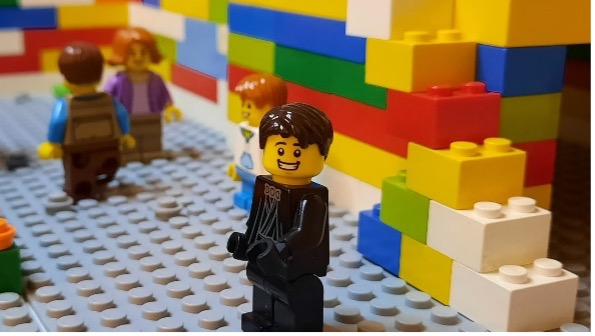

Welcome to Frame by Block, the ultimate beginner’s
guide to LEGO stop-motion animation! Our website helps
aspiring creators or curious Lego fans bring their
brick-built stories to life with easy, step-by-step tutorials.
You’ll learn everything from setting up your camera and lighting
to creating smooth motion, adding sound effects, and editing your
final video. Frame by Block also includes gear recommendations,
directing advice, and helpful tips for beginner animators.
What makes our site unique is its focus on simplicity and
creativity, with no expensive equipment or advanced software required.
Whether you’re a child, hobbyist, or first-time filmmaker, Frame by Block
gives you all the tools and inspiration to turn your LEGO ideas into mini
masterpieces.